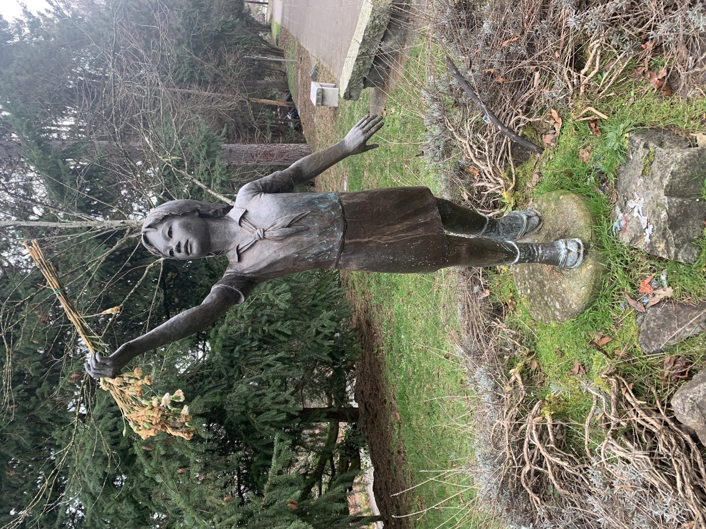

№0108 мая 2026
Свежий выпуск
Второй майский: жук, журавлик и длинные выходные
Паустовский, история Садако, один семейный фотоальбом, прогулка на запах сирени, «Жил-был пёс» и складной плед для парка или дачи.
📚 книга✂️ журавлик💬 память🌸 сирень🎬 мультфильм🧺 находка
Открыть выпуск